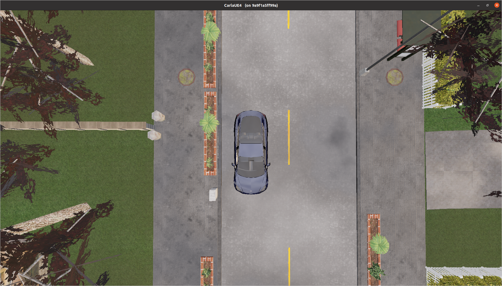

入门
Prerequisites
We will run Carla and Apollo in docker. Furthermore, NVIDIA Container Toolkit is needed. You can refer to the following link to install NVIDIA Container Toolkit: * https://docs.nvidia.com/datacenter/cloud-native/container-toolkit/install-guide.html
Alternatively, simply perform the following steps：
- docker
sudo apt-get install docker.io
curl https://get.docker.com | sh \
&& sudo systemctl --now enable docker
distribution=$(. /etc/os-release;echo $ID$VERSION_ID) \
&& curl -fsSL https://nvidia.github.io/libnvidia-container/gpgkey | sudo gpg --dearmor -o /usr/share/keyrings/nvidia-container-toolkit-keyring.gpg \
&& curl -s -L https://nvidia.github.io/libnvidia-container/$distribution/libnvidia-container.list | \
sed 's#deb https://#deb [signed-by=/usr/share/keyrings/nvidia-container-toolkit-keyring.gpg] https://#g' | \
sudo tee /etc/apt/sources.list.d/nvidia-container-toolkit.list
sudo apt-get update
sudo apt-get install -y nvidia-docker2
sudo systemctl restart docker
- docker-compose
sudo curl -L "https://github.com/docker/compose/releases/download/v2.0.1/docker-compose-$(uname -s)-$(uname -m)" -o /usr/local/bin/docker-compose
- Change File Permission:
sudo chmod +x /usr/local/bin/docker-compose
Apply executable permissions to the standalone binary in the target path for the installation. Test and execute compose commands using docker-compose. Note: If the command docker-compose fails after installation, check your path. You can also create a symbolic link to /usr/bin or any other directory in your path. For example:
sudo ln -s /usr/local/bin/docker-compose /usr/bin/docker-compose
Build And Run Apollo
-
Refer to this link：
https://github.com/ApolloAuto/apollo/blob/master/docs/01_Installation%20Instructions/apollo_software_installation_guide.md -
Clone apollo v8.0.0
# Using SSH
git clone -b v8.0.0 git@github.com:ApolloAuto/apollo.git
#Using HTTPS
git clone -b v8.0.0 https://github.com/ApolloAuto/apollo.git
- Build Apollo
cd apollo
echo "export APOLLO_ROOT_DIR=$(pwd)" >> ~/.bashrc && source ~/.bashrc
Then, run:
sudo rm -rf /apollo/.cache
bash docker/scripts/dev_start.sh
Upon successful execution, you will see the following message
[ OK ] Congratulations! You have successfully finished setting up Apollo Dev Environment.
[ OK ] To login into the newly created apollo_dev_lei container, please run the following command:
[ OK ] bash docker/scripts/dev_into.sh
[ OK ] Enjoy!
Above If you occured error as "ERROR: Config value 'cuda' is not defined in any .rc file",you can try
./apollo.sh config -n
Run this command to enter the container
bash docker/scripts/dev_into.sh
Make the GPU version:
./apollo.sh build_gpu
After successful compilation, the following will be printed:
==============================================
[ OK ] Done building apollo. Enjoy!
==============================================
Run this command in the container to start Dreamview
./scripts/bootstrap.sh
Finally, open the link in your browser
http://localhost:8888/
Refined Controller
Note that this project provides a refined MPC controller that improves the performance of the Apollo MPC controller in this co-simulation. Please refer to RefinedController.md for details.
Run Carla
- Clone the carla_apollo_bridge project outside Apollo container
# Using SSH
git clone git@github.com:guardstrikelab/carla_apollo_bridge.git
#Using HTTPS
git clone https://github.com/guardstrikelab/carla_apollo_bridge.git
- Pull carla image and run
cd carla_apollo_bridge
./scripts/docker_run_carla.sh
Run carla_apollo_bridge
- Copy the src folder into Apollo container
docker cp carla_bridge <apollo_container_name>:/apollo/modules/carla_bridge -
Install carla_bridge
Enter the Apollo container and run:
cd /apollo/modules/carla_bridge chmod +x install.sh ./install.sh source ~/.bashrc -
Start the bridge
python main.py
Result
If everything above goes well, you should see this in Apollo client:

and this in Carla:

Example: start a co-simulation
- Open apollo client: http://localhost:8888
- If dreamview doesn't display the map, switch to carla_town04 and then switch back.
- (Optional) Select "Task" in the sidebar and turn on "Camera Sensor" in "Others".
- (Optional) Select "Layer Menu" in the sidebar and turn on "Point Cloud" in "Perception".
- Select "Module Controller" in the sidebar and turn on "Routing", "Localization", "Planning", "Control", "Predict" module.
- Select "Route Editing" in the sidebar.
- Click "Add Point of Interest" and left click at any point on the road to set the destination.
- Click "Send Routing Request".